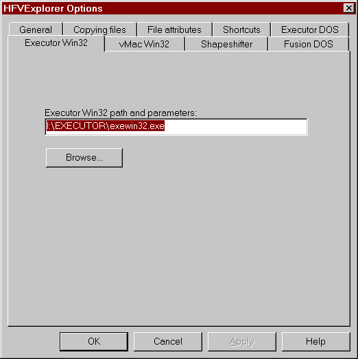

Select the path for Executor Win32 version. You can also enter the parameters here (for example):
I:\EXECUTOR\executor.exe -system 7 -size 1024x768
Or, leave it like in the picture above and create "commands.txt" file (this is a feature of Executor, not HFVExplorer), containing the following:-system 7 -size 1024x768